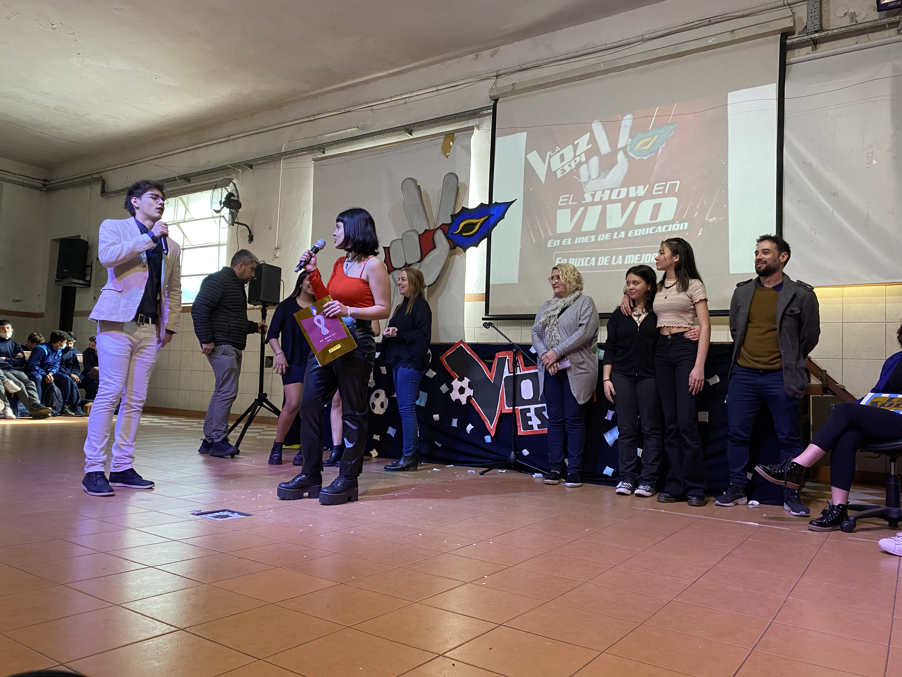

ACTO MES DE LA EDUCACIÓN
El acto que se le designó a 5to año por el día del maestro fue llevado a cabo con ayuda de los profesores Paganini, Marecos, Fariña y Prieto.
Se utilizaron horas de clase de los profesores nombrados para ensayar y organizarlo, 5to se dividió en grupos donde algunos se encargaron de la
organización, otros se encargaron de la escenografía y los demás de los regalos… Era una edición especial de “LA VOZ” donde por ser épocas del mundial
era una edición argentina donde se presentaban canciones que todos conocemos. El acto era conducido por Marley y Lali.
Se hacían rondas de batallas por grupos de alumnos y profesores.
Para llevarlo a cabo se convocaron alumnos de distintos años de la secundaria y post primario, los alumnos que se ofrecieron debían cantar junto a
profesores, con la diferencia de que ellos ensayarían y los profesores no. Por cada ronda había un ganador que era elegido por aplausos del público
con una devolución de nuestros jurados donde los alumnos de 5to actuaron de La Sole, Tini, Maradona y Duki.
El acto fue dividido por partes, primero se hicieron 4 rondas de batallas, se presentó un video sorpresa de un álbum de figus y se le repartieron
a el equipo docente y no docente del colegio, se hizo una mini presentación de un alumno con “duki” cantando una canción de ese jurado, se hicieron
3 rondas más de batallas y se terminó con una presentación de 5to.
Por suerte pudieron organizarse para lograr un acto completo y divertido.


